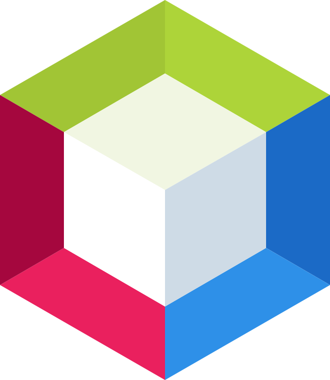
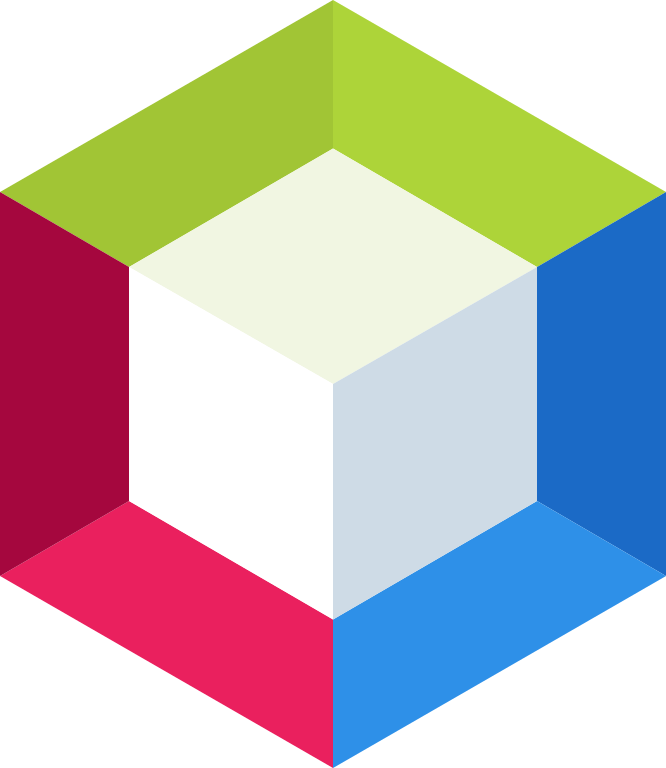

Rubén Miguel Castro Villegas
Limón, Guápiles | +506 8450-7930 | 2828rubencastro@gmail.com | Última actualización: 19/8/24
Soy estudiante de Ingeniería en Sistemas Computacionales con un año y medio de experiencia en la carrera, actualmente cursando el 50% del programa. Tengo conocimientos en bases de datos, redes y programación, y disfruto ayudar y brindar soporte a personas con problemas tecnológicos generales. Mi pasión por la tecnología me impulsa a aprender rápidamente y a mantenerme actualizado con las últimas tendencias. Siempre me esfuerzo por proporcionar un excelente servicio y superar las expectativas en cada tarea que realizo


Experiencia
Computacional
Java | Python | HTML | CSS | SQL | Cisco | JS
Enero 2023 - Presente
Microsoft Office
Teams | Word | Excel | Power Point | Outlook | Windows
Enero 2017 - Presente
Educación
Bachiller en educación media
Colegio Bilingüe San Francisco de Asís
Enero 2017 - Diciembre 2022
Bachiller en ingeniería de sistemas computacionales
Universidad U Latina de Costa Rica
Enero 2023 - Presente
Habilidades


 



Intereses
Soy un estudiante motivado y apasionado por el aprendizaje, con un fuerte deseo de mejorar mis habilidades y conocimientos en el campo de la tecnología. Me entusiasma dedicar tiempo a proyectos informáticos y estoy dispuesto a aprender de todas las oportunidades que se me presenten. Como persona abierta y receptiva, estoy dispuesto a aprender nuevas habilidades y experiencias laborales que me permitan crecer profesionalmente. Me gusta establecer metas a corto y largo plazo, y trabajar hacia ellas con determinación y perseverancia, con el objetivo de alcanzar un crecimiento constante en mi carrera.
En mi tiempo libre, disfruto de una variedad de actividades. Me apasiona la música y disfruto escuchando diferentes géneros. También soy un entusiasta de los videojuegos, ya que me permiten explorar nuevos mundos y desafíos. Además, me gusta pasar tiempo al aire libre y explorar la naturaleza, lo que me ayuda a desconectar y recargar energías. Como alguien interesado en la tecnología, siempre estoy atento a las últimas novedades y tendencias en el sector, y me gusta estar conectado con profesionales y expertos a través de redes sociales especializadas.
Competencias
 Visa Americana vigente
Visa Americana vigente
- Licencia B1
- Trabajo bajo presión
- Comunicación asertiva
- Potencial para proponer ideas
innovadoras
- Capacidad de trabajar en
ambientes multiculturales
- Liderazgo
- Inglés avanzado